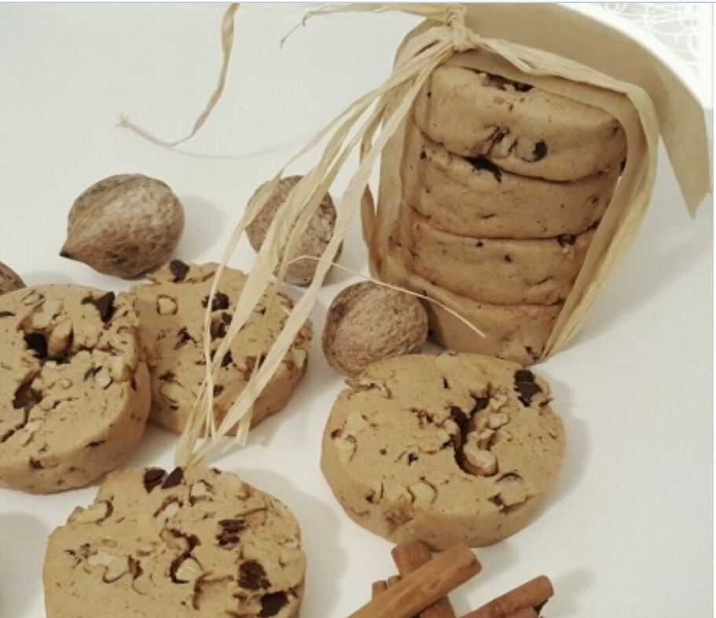

Kaç kişilik: 8-10 kişilik Hazırlama ve
Pişirme süresi: 5dk hazırlık, 15dk pişirme
Starbucks Kurabiye Tarifi'nin
Malzemeleri
200 ml lik su bardağı ölçüsü kullandım.
- 2 yumurta sarısı
- 150 gr tereyağı ya da margarin
- 1 su bardağından bir parmak eksik pudra şekeri (100 gram)
- 1 yemek kaşığı su
- 2 paket vanilya
- 1 çay kaşığı kabartma tozu
- 1 silme tatlı kaşığı tarçın
- 3 su bardağı un (300 gram)
- Yarım su bardağına yakın damla çikolata (50 gram)
- 1 su bardağı iri bölünmüş ceviz (100 gram)
Starbucks Kurabiye Tarifi'nin Yapılışı
- Yumurta sarısı ile pudra şekerini el çırpıcı ile iyice karıştıralım.
- Karışıma un, ceviz ve damla çikolata hariç diğer malzemeleri karıştıralım ve iyice karıştıralım.
- Elenmiş unu katalım ve hamurumuzu yoğuralım.
Ben cevizleri bıçak ile iri olacak şekilde böldüm.
- Hamurun tezgaha alıp çikolata ve cevizi ekleyip malzemeler birbirine karışına kadar dikkatli bir
şekilde yoğuralım.
- Hamurumuzu silindir yapalım ve streç filme iyice saralım.
Buzdolabında en az 1 saat olacak şekilde dinlendirelim. Ne kadar uzun süre bekletirsek dilimlememiz o
kadar kolaylaşır.
- Beklettiğimiz hamuru 1 parmak eninde keskin bir bıçakla dilimleyelim. Fırın tepsimize dizelim.
- Önceden ısıtılmış 170 derecelik fırında 15-17 dk civarı pişiriyoruz. Fırınlar farklılık gösterebilir
siz kontrollü pişirin
Soğuduktan sonra tepsiden alabilirsiniz. Kapalı saklama kabında buzdolabında muhafaza edebilirsiniz.
Şimdiden kolay gelsin, afiyetler olsun.
Püf Noktaları
- Tüm malzemelerin oda sıcaklığında bekletilmiş olması önemli. Özellikle tereyağının oda sıcaklığında yumuşamış olmasına özen göstermelisiniz.
- Hamuru yoğururken unu yavaş yavaş eklemelisiniz. Unun cinsi veya malzemelerden kaynaklı ufak farklılıklardan dolayı kullandığınız un miktarı biraz artabilir veya azalabilir.
AFİYET OLSUN